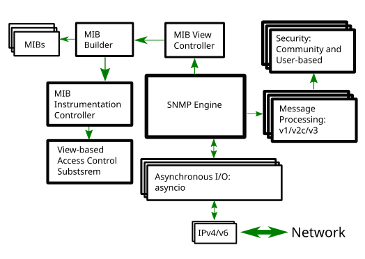

PySNMP architecture¶
We can look at PySNMP’s internal structure from the view point of SNMP protocol evolution. SNMP was evolving for many years from a relatively simple way to structure and retrieve data (SNMPv1/v2c) all the way to extensible and modularized framework that supports strong crypto out-of-the-box (SNMPv3).
In the order from most ancient SNMP services to the most current ones, what follows are different layers of PySNMP APIs:
The most basic and low-level is SNMPv1/v2c protocol scope. Here programmer is supposed to build/parse SNMP messages and their payload – Protocol Data Unit (PDU), handle protocol-level errors, transport issues and so on. Although considered rather complex to deal with, this API probably gives best performance, memory footprint and flexibility, unless MIB access and/or SNMPv3 support is needed.
SNMPv3 standards come with abstract service interfaces to SNMP engines and its components. PySNMP implementation adopts this abstract API to a great extent, so it can be used directly. As additional benefit, SNMP RFCs could be referred to API semantics when programming PySNMP at this level. User could implements his own SNMP application using this API.
SNMPv3 (RFC 3413) introduced a concept of core “SNMP Applications”. PySNMP implements them all (in pysnmp.entity.rfc3413), so user can base his application right on top of one (or multiple) of those SNMP core applications.
Finally, to make SNMP more simple for, at least, most frequent tasks, PySNMP comes with a high-level API to core SNMP applications and some of SNMP engine services. This API is known under the name pysnmp.hlapi and should be used whenever possible.
Another view to PySNMP internals could be from the code standpoint: PySNMP consists of a handful of large, self-contained components with well-defined interfaces. The following figure explains PySNMP functional structure.

PySNMP inner components:
SNMP Engine is a central, umbrella object that controls the other components of the SNMP system. Typical user application has a single instance of SNMP Engine class possibly shared by many SNMP Applications of all kinds. As the other linked-in components tend to buildup various configuration and housekeeping information in runtime, SNMP Engine object appears to be expensive to configure to a usable state.
Transport subsystem is used for sending SNMP messages to and accepting them from network. The I/O subsystem consists of an abstract Dispatcher and one or more abstract Transport classes. Concrete Dispatcher implementation is I/O method-specific, consider BSD sockets for example. Concrete Transport classes are transport domain-specific. SNMP frequently uses UDP Transport but others are also possible. Transport Dispatcher interfaces are mostly used by Message And PDU Dispatcher. However, when using the SNMPv1/v2c-native API (the lowest-level one), these interfaces would be invoked directly.
Message and PDU Dispatcher is the locus of SNMP message processing activities. Its main responsibilities include dispatching PDUs from SNMP Applications through various subsystems all the way down to Transport Dispatcher, and passing SNMP messages coming from network up to SNMP Applications. It maintains logical connection with Management Instrumentation Controller which carries out operations on Managed Objects, here for the purpose of LCD access.
Message Processing Modules handle message-level protocol operations for present and possibly future versions of SNMP protocol. Most importantly, these include message parsing/building and possibly invoking security services whenever required.
Message Security Modules perform message authentication and/or encryption. As of this writing, User-Based (for v3) and Community (for v1/2c) modules are implemented in PySNMP. All Security Modules share standard API used by Message Processing subsystem.
Access Control subsystem uses LCD information to authorize remote access to Managed Objects. This is used when running in agent role.
A collection of MIB modules and objects that are used by SNMP engine for keeping its configuration and operational statistics. They are collectively called Local Configuration Datastore (LCD).
In most cases user is expected to only deal with the high-level API to all these PySNMP components. However implementing SNMP Agents, Proxies and some non-trivial features of managers require using the Standard Applications API. In those cases general understanding of SNMP operations and SNMP Engine components would be helpful.